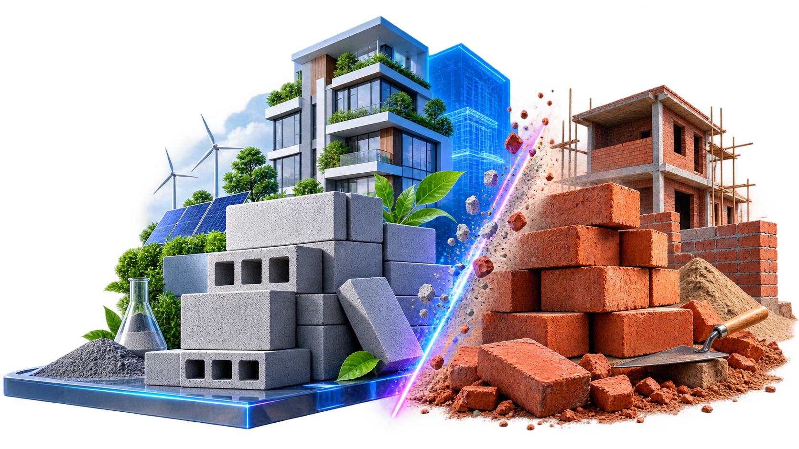
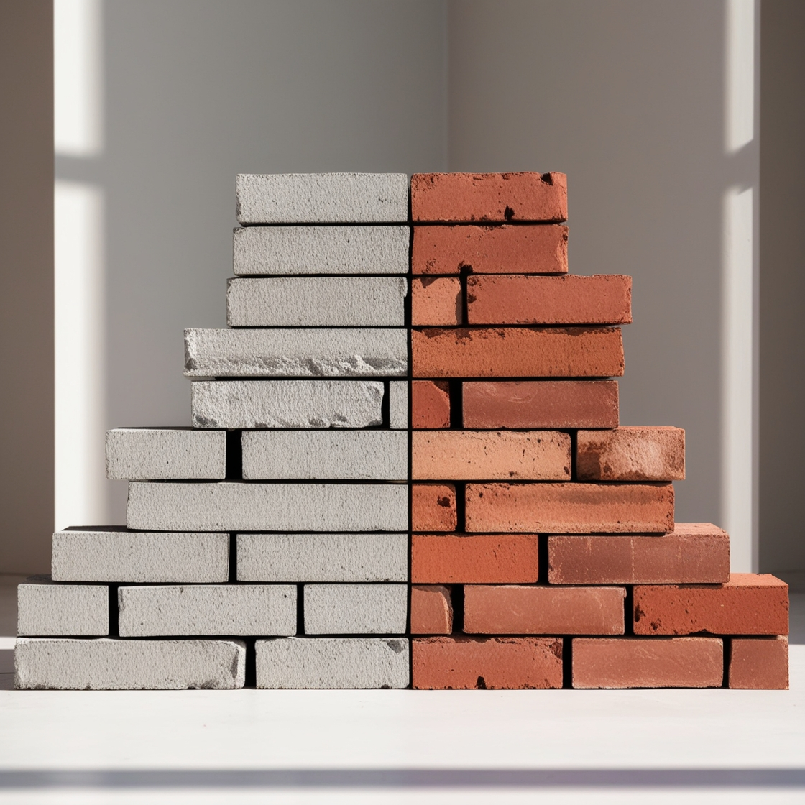

When it comes to building a house or any other structure, one of the most important decisions is choosing the right type of bricks. In recent years, fly ash bricks have gained popularity as an alternative to traditional red bricks. But between fly ash bricks vs red bricks, which one should you use?
When it comes to building a house or any other structure, one of the most important decisions is choosing the right type of bricks. In recent years, fly ash bricks have gained popularity as an alternative to traditional red bricks. But between fly ash bricks vs red bricks, which one should you use?
Red brick, also known as clay brick, is a type of building material made from natural clay that is formed into rectangular shapes and then fired in a kiln at high temperatures. It is one of the oldest and most traditional construction materials used worldwide.
Fly ash bricks are eco-friendly building materials manufactured using industrial waste materials, primarily fly ash obtained from coal-fired power plants, combined with cement, sand, and water. These bricks represent a modern approach to sustainable construction.
While both types of bricks have their own advantages and disadvantages, there are several key differences between fly ash bricks and red bricks:
| Feature | Fly Ash Bricks | Red Bricks |
|---|---|---|
| Composition | Industrial waste (fly ash), cement, sand, and water | Natural clay |
| Environmental Impact | Eco-friendly, uses waste materials, reduces carbon footprint | Uses natural resources, higher carbon emissions during production |
| Insulation | Limited thermal insulation properties | Better sound and thermal insulation due to higher density |
| Surface Finish | Smooth surface, often doesn't require plastering | Rough surface, typically requires plastering |
| Weight | Lightweight, easier to handle and transport | Heavier, requires more labor and resources to transport |
| Compressive Strength | 75-100 kg/cm² | Higher compressive strength, better for load-bearing applications |
| Water Absorption | Higher water absorption rate | Lower water absorption rate, less prone to moisture issues |
Fly ash bricks are manufactured using industrial waste materials, primarily fly ash obtained from coal-fired power plants. This waste material is combined with cement, sand, and water to form a paste, which is then moulded and cured to create the bricks. On the other hand, red bricks are made from clay, a naturally occurring resource that is abundant in many regions. The clay is mixed with water, moulded into brick shapes, and fired in kilns to harden them.
Fly ash bricks have limited thermal insulation properties and may not effectively retain heat in cold climates. In contrast, red bricks offer both sound and thermal insulation due to their higher density and lower thermal conductivity. This makes red bricks a preferable choice for environments where temperature regulation and noise reduction are important considerations.
Fly ash bricks offer a smooth surface finish, eliminating the need for plastering. Their smooth texture provides aesthetic appeal and reduces the overall construction time and cost. In contrast, red bricks typically require plastering to achieve a smooth and finished appearance.
Fly ash bricks are lightweight compared to red bricks. The inclusion of fly ash, which is a lightweight material, in the manufacturing process reduces the overall density of fly ash bricks. This lightweight nature makes them easier to handle, transport, and install during construction. In contrast, red bricks are heavier and denser due to the clay used. The higher density of red bricks provides additional strength and stability to the structures in which they are used.
Red bricks are renowned for their strength and durability. They have a higher compressive strength compared to fly ash bricks, making them suitable for load-bearing applications. The higher strength of red bricks allows them to withstand heavier loads without experiencing significant deformation or failure. Fly ash bricks have a lower compressive strength compared to red bricks, but they still possess adequate strength for many construction purposes.
Fly ash bricks tend to have a higher water absorption rate compared to red bricks. The porous nature of fly ash bricks, coupled with the presence of fine particles, can result in increased water absorption. This higher water absorption rate makes fly ash bricks more susceptible to moisture-related issues such as efflorescence and spalling if not properly protected or waterproofed. Red bricks, with their denser structure, generally have a lower water absorption rate and are less prone to moisture-related problems.
Fly ash bricks are comparatively lighter than red bricks. The lightweight nature of fly ash bricks makes them easier to handle, transport, and install during construction. Red bricks, being heavier, require more effort and labour for transportation and installation. In terms of weight between fly ash bricks vs red bricks, the former would be a smarter option to choose.
These properties of fly ash bricks remarkably contribute to their popularity and suitability for construction projects:
Fly ash bricks boast an impressive compressive strength ranging from 75-100 kg/cm². They're not just bricks; they're the backbone of load-bearing structures that stand tall against heavy loads without buckling.
The high melting point and non-toxic nature of the bricks ensure that they won't release harmful fumes when exposed to fire. Feel secure in your building, knowing that fly ash bricks offer exceptional fire resistance.
The fly ash bricks have excellent sound insulation properties, effectively absorbing intrusive noise vibrations. With this, the space becomes calm, shielding you from the chaos of the bustling city or the busy neighbourhood.
Fly ash bricks are built to last, weathering the storm of time with resilience. They stand strong against weathering, erosion, and chemical attacks. From heat to rain, fly ash bricks retain their structural integrity.
Fly ash bricks embody sustainability at its finest. Crafted from industrial waste materials like fly ash, they breathe new life into what would have been destined for landfills. Fly ash bricks actively contribute to reducing environmental pollution and minimising your project's carbon footprint.

Both fly ash bricks and red bricks have their advantages and disadvantages. The choice between the two depends on various factors such as climate, budget, project requirements, and environmental concerns. Fly ash bricks are more eco-friendly and lightweight, while red bricks offer better insulation and strength. Consider your specific needs and consult with construction experts to make the best choice for your project.
Consult Jee Engineers for automatic hydraulic brick making machines, custom plant layouts, and technical support in Ahmedabad.